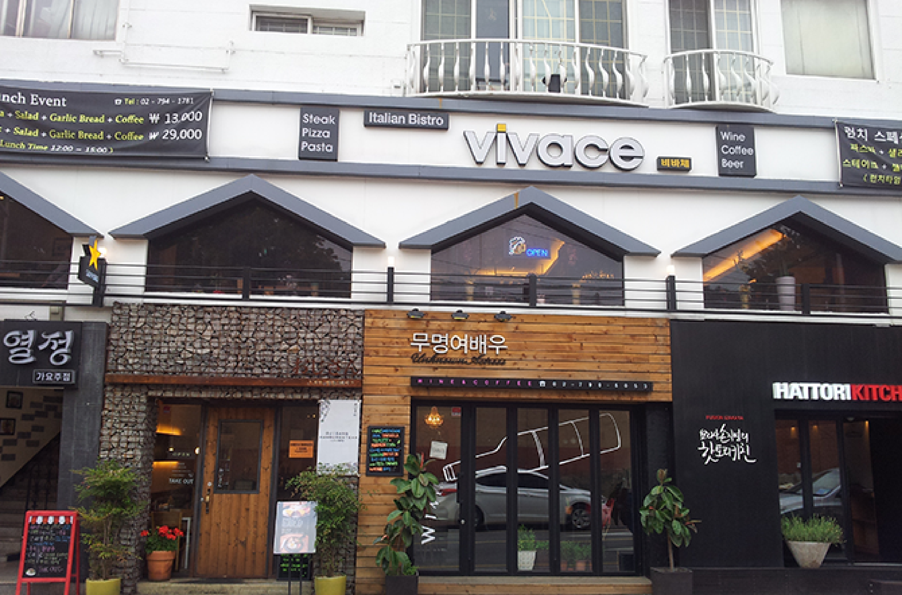

세번째로 제가 제일 좋아하는 곳인
동판교의 아브뉴프랑입니다.
이 곳을 좋아하게 된 이유는 일단 우리 집 근처입니다. 아브뉴프랑에서 5분거리에 집이 있는데 정말 가깝고 프랑스의 거리를 재현한 거라 외국을 일본밖에 안 가본 문외한으로써 너무 신기하고 좋습니다. 그리고 새로 생겨서 너무 깔끔하고 분위기가 너무 좋아서 밤에 다니기 딱 좋습니다. 여기서 3분거리에는 또 현대백화점이 엄청 크게 들어설 준비를 하고있습니다. 현대백화점이 들어서면 사람들이 많아질테니 먼저 서둘러서 둘러서 구경해보시기 바랍니다.
여기엔 쟈니로켓이라는 햄버거집이 있는데
제가 햄버거를 너무좋아해서 햄버거집을 좋아합니다. 수제햄버건데 미국식이라고 합니다.
미국에 가본적은 없지만 아무튼...
미국식이다보니 미국을 좋아하는 저로써는 정말 최적의 장소가 아닐까합니다... 수제햄버거가 정말 맛있습니다.. 꼭 들러서 행복하시기바랍니다!
삼청동
삼청동에가면 정말로 아기자기한 것들이 많습니다. 골목자체도 아기자기, 건물도 아기자기, 매장들 전부가 아기자기하고 분위기있습니다. 삼청동은 안국역에서 내리면되는데 안국역에서 왼쪽은 인사동 오른쪽은 삼청동입니다. 놀기 딱 좋은곳입니다. 삼청동에서 제가 제일 좋아하는 가게는 서울서둘째로 잘하는집입니다. 서울서둘째로 잘하는집이 가게이름인데 주로 단팥죽을 팔고있습니다. 단팥죽이 정말 맛있고 건강해서 부모님도 언젠가 한번 데려가보고싶은 곳입니다. 다들 삼청동 가면 한번씩 들러서 맛보시기 바랍니다. 굉장히 건강해지는 기분입니다. 삼청동은 분위기가 고즈넉해서 연인들과 가기 딱 좋습니다.

경리단길
경리단길은 내가 20살때 처음 친구따라갔는데 너무좋아서 계속 기억에남아 자주 다니던곳이다. 이 길에 가면 꼭 먹어야 할 맥주집이 있는데 바로 Magpie 라는 피자 맥주집인데 정말 맛있습니다. 경리단길이 또 에일맥주로 유명한 골목인데 에일맥주와 피자는 환상궁합입니다. 그 중에 Magpie가 단연 으뜸이에요. 페퍼로니피자나 치즈피자를 시켜놓고 맥주한잔씩 하면서 얘기하면 분위기에 취하고 알콜에 취하고 정말 기분이 좋아지는 곳입니다. 경리단길에는 그리고 이슬람사원이있습니다. 이슬람사원에도 가보는 것도 재밌고 곳곳에 맛집들이 숨어있습니다. 거리도 요소요소마다 재미있어서 너무 좋습니다. 그리고 스트릿 츄로라고 정말 맛있는 츄러스집이 있습니다.
시간 되시는 분들 꼭 가보셨으면 좋겠습니다.